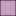

<!doctype html>
<html lang="en">
    <head>
        <meta charset="utf-8">
        <meta http-equiv="X-UA-Compatible" content="IE=edge">
        <meta name="viewport" content="initial-scale=1,user-scalable=no,maximum-scale=1,width=device-width">
        <meta name="mobile-web-app-capable" content="yes">
        <meta name="apple-mobile-web-app-capable" content="yes">
        <link rel="stylesheet" href="css/leaflet.css"><link rel="stylesheet" href="css/L.Control.Locate.min.css">
        <link rel="stylesheet" href="css/qgis2web.css"><link rel="stylesheet" href="css/fontawesome-all.min.css">
        <link rel="stylesheet" href="css/leaflet-search.css">
        <link rel="stylesheet" href="css/filter.css">
<link rel="stylesheet" href="css/nouislider.min.css">
        <link rel="stylesheet" href="css/leaflet-control-geocoder.Geocoder.css">
        <link rel="stylesheet" href="css/leaflet-measure.css">
        <style>
        #map {
            width: 1121px;
            height: 774px;
        }
        </style>
        <title></title>
    </head>
    <body>
        <div id="map">
        </div>
        <script src="js/qgis2web_expressions.js"></script>
        <script src="js/leaflet.js"></script><script src="js/L.Control.Locate.min.js"></script>
        <script src="js/leaflet.rotatedMarker.js"></script>
        <script src="js/leaflet.pattern.js"></script>
        <script src="js/leaflet-hash.js"></script>
        <script src="js/Autolinker.min.js"></script>
        <script src="js/rbush.min.js"></script>
        <script src="js/labelgun.min.js"></script>
        <script src="js/labels.js"></script>
        <script src="js/leaflet-control-geocoder.Geocoder.js"></script>
        <script src="js/leaflet-measure.js"></script>
        <script src="js/leaflet-search.js"></script>
        <script src="js/tailDT.js"></script>
<script src="js/nouislider.min.js"></script>
<script src="js/wNumb.js"></script>
        <script src="data/Otanche_3.js"></script>
        <script src="data/Ecosistemas_Otanche_4.js"></script>
        <script src="data/Vas_Otanche_5.js"></script>
        <script src="data/Construcciones_Otanche_6.js"></script>
        <script src="data/INTERFIN_7.js"></script>
        <script>
        var highlightLayer;
        function highlightFeature(e) {
            highlightLayer = e.target;

            if (e.target.feature.geometry.type === 'LineString') {
              highlightLayer.setStyle({
                color: '#ffff00',
              });
            } else {
              highlightLayer.setStyle({
                fillColor: '#ffff00',
                fillOpacity: 1
              });
            }
        }
        var map = L.map('map', {
            zoomControl:true, maxZoom:28, minZoom:1
        }).fitBounds([[5.537399581945208,-73.5046785757278],[6.089596455461214,-72.70649043049113]]);
        var hash = new L.Hash(map);
        map.attributionControl.setPrefix('<a href="https://github.com/tomchadwin/qgis2web" target="_blank">qgis2web</a> &middot; <a href="https://leafletjs.com" title="A JS library for interactive maps">Leaflet</a> &middot; <a href="https://qgis.org">QGIS</a>');
        var autolinker = new Autolinker({truncate: {length: 30, location: 'smart'}});
        L.control.locate({locateOptions: {maxZoom: 19}}).addTo(map);
        var measureControl = new L.Control.Measure({
            position: 'topleft',
            primaryLengthUnit: 'meters',
            secondaryLengthUnit: 'kilometers',
            primaryAreaUnit: 'sqmeters',
            secondaryAreaUnit: 'hectares'
        });
        measureControl.addTo(map);
        document.getElementsByClassName('leaflet-control-measure-toggle')[0]
        .innerHTML = '';
        document.getElementsByClassName('leaflet-control-measure-toggle')[0]
        .className += ' fas fa-ruler';
        var bounds_group = new L.featureGroup([]);
        function setBounds() {
        }
        map.createPane('pane_ESRIGraydark_0');
        map.getPane('pane_ESRIGraydark_0').style.zIndex = 400;
        var layer_ESRIGraydark_0 = L.tileLayer('http://services.arcgisonline.com/ArcGIS/rest/services/Canvas/World_Dark_Gray_Base/MapServer/tile/{z}/{y}/{x}', {
            pane: 'pane_ESRIGraydark_0',
            opacity: 1.0,
            attribution: '',
            minZoom: 1,
            maxZoom: 28,
            minNativeZoom: 0,
            maxNativeZoom: 20
        });
        layer_ESRIGraydark_0;
        map.addLayer(layer_ESRIGraydark_0);
        map.createPane('pane_ESRIGraylight_1');
        map.getPane('pane_ESRIGraylight_1').style.zIndex = 401;
        var layer_ESRIGraylight_1 = L.tileLayer('http://services.arcgisonline.com/ArcGIS/rest/services/Canvas/World_Light_Gray_Base/MapServer/tile/{z}/{y}/{x}', {
            pane: 'pane_ESRIGraylight_1',
            opacity: 1.0,
            attribution: '',
            minZoom: 1,
            maxZoom: 28,
            minNativeZoom: 0,
            maxNativeZoom: 20
        });
        layer_ESRIGraylight_1;
        map.addLayer(layer_ESRIGraylight_1);
        map.createPane('pane_GoogleHybrid_2');
        map.getPane('pane_GoogleHybrid_2').style.zIndex = 402;
        var layer_GoogleHybrid_2 = L.tileLayer('https://mt1.google.com/vt/lyrs=y&x={x}&y={y}&z={z}', {
            pane: 'pane_GoogleHybrid_2',
            opacity: 1.0,
            attribution: '<a href="https://www.google.at/permissions/geoguidelines/attr-guide.html">Map data ©2015 Google</a>',
            minZoom: 1,
            maxZoom: 28,
            minNativeZoom: 0,
            maxNativeZoom: 20
        });
        layer_GoogleHybrid_2;
        map.addLayer(layer_GoogleHybrid_2);
        function pop_Otanche_3(feature, layer) {
            layer.on({
                mouseout: function(e) {
                    for (i in e.target._eventParents) {
                        e.target._eventParents[i].resetStyle(e.target);
                    }
                },
                mouseover: highlightFeature,
            });
        }

        function style_Otanche_3_0() {
            return {
                pane: 'pane_Otanche_3',
                opacity: 1,
                color: 'rgba(35,35,35,1.0)',
                dashArray: '',
                lineCap: 'butt',
                lineJoin: 'miter',
                weight: 1.0, 
                fill: true,
                fillOpacity: 1,
                fillColor: 'rgba(229,214,178,1.0)',
                interactive: true,
            }
        }
        map.createPane('pane_Otanche_3');
        map.getPane('pane_Otanche_3').style.zIndex = 403;
        map.getPane('pane_Otanche_3').style['mix-blend-mode'] = 'normal';
        var layer_Otanche_3 = new L.geoJson(json_Otanche_3, {
            attribution: '',
            interactive: true,
            dataVar: 'json_Otanche_3',
            layerName: 'layer_Otanche_3',
            pane: 'pane_Otanche_3',
            onEachFeature: pop_Otanche_3,
            style: style_Otanche_3_0,
        });
        bounds_group.addLayer(layer_Otanche_3);
        map.addLayer(layer_Otanche_3);
        function pop_Ecosistemas_Otanche_4(feature, layer) {
            layer.on({
                mouseout: function(e) {
                    for (i in e.target._eventParents) {
                        e.target._eventParents[i].resetStyle(e.target);
                    }
                },
                mouseover: highlightFeature,
            });
            var popupContent = '<table>\
                    <tr>\
                        <th scope="row">ECOSISTEMA</th>\
                        <td>' + (feature.properties['ECOSISTEMA'] !== null ? autolinker.link(feature.properties['ECOSISTEMA'].toLocaleString()) : '') + '</td>\
                    </tr>\
                </table>';
            layer.bindPopup(popupContent, {maxHeight: 400});
        }

        function style_Ecosistemas_Otanche_4_0(feature) {
            switch(String(feature.properties['ECOSISTEMA'])) {
                case 'Agroecosistemas campesinos mixtos':
                    return {
                pane: 'pane_Ecosistemas_Otanche_4',
                opacity: 1,
                color: 'rgba(35,35,35,1.0)',
                dashArray: '',
                lineCap: 'butt',
                lineJoin: 'miter',
                weight: 1.0, 
                fill: true,
                fillOpacity: 1,
                fillColor: 'rgba(213,226,169,0.8)',
                interactive: true,
            }
                    break;
                case 'Agroecosistemas Lecheros':
                    return {
                pane: 'pane_Ecosistemas_Otanche_4',
                opacity: 1,
                color: 'rgba(35,35,35,1.0)',
                dashArray: '',
                lineCap: 'butt',
                lineJoin: 'miter',
                weight: 1.0, 
                fill: true,
                fillOpacity: 1,
                fillColor: 'rgba(233,172,150,0.8)',
                interactive: true,
            }
                    break;
                case 'Areas rurales intervenidas':
                    return {
                pane: 'pane_Ecosistemas_Otanche_4',
                opacity: 1,
                color: 'rgba(35,35,35,1.0)',
                dashArray: '',
                lineCap: 'butt',
                lineJoin: 'miter',
                weight: 1.0, 
                fill: true,
                fillOpacity: 1,
                fillColor: 'rgba(192,240,103,0.8)',
                interactive: true,
            }
                    break;
                case 'BMD Andinos y Alto-andinos de Roble':
                    return {
                pane: 'pane_Ecosistemas_Otanche_4',
                opacity: 1,
                color: 'rgba(35,35,35,1.0)',
                dashArray: '',
                lineCap: 'butt',
                lineJoin: 'miter',
                weight: 1.0, 
                fill: true,
                fillOpacity: 1,
                fillColor: 'rgba(189,134,180,0.8)',
                interactive: true,
            }
                    break;
                case 'BMD Húmedos Andinos':
                    return {
                pane: 'pane_Ecosistemas_Otanche_4',
                opacity: 1,
                color: 'rgba(35,35,35,1.0)',
                dashArray: '',
                lineCap: 'butt',
                lineJoin: 'miter',
                weight: 1.0, 
                fill: true,
                fillOpacity: 1,
                fillColor: 'rgba(82,154,72,0.8)',
                interactive: true,
            }
                    break;
            }
        }
        map.createPane('pane_Ecosistemas_Otanche_4');
        map.getPane('pane_Ecosistemas_Otanche_4').style.zIndex = 404;
        map.getPane('pane_Ecosistemas_Otanche_4').style['mix-blend-mode'] = 'normal';
        var layer_Ecosistemas_Otanche_4 = new L.geoJson(json_Ecosistemas_Otanche_4, {
            attribution: '',
            interactive: true,
            dataVar: 'json_Ecosistemas_Otanche_4',
            layerName: 'layer_Ecosistemas_Otanche_4',
            pane: 'pane_Ecosistemas_Otanche_4',
            onEachFeature: pop_Ecosistemas_Otanche_4,
            style: style_Ecosistemas_Otanche_4_0,
        });
        bounds_group.addLayer(layer_Ecosistemas_Otanche_4);
        map.addLayer(layer_Ecosistemas_Otanche_4);
        function pop_Vas_Otanche_5(feature, layer) {
            layer.on({
                mouseout: function(e) {
                    for (i in e.target._eventParents) {
                        e.target._eventParents[i].resetStyle(e.target);
                    }
                },
                mouseover: highlightFeature,
            });
        }

        function style_Vas_Otanche_5_0() {
            return {
                pane: 'pane_Vas_Otanche_5',
                opacity: 1,
                color: 'rgba(14,21,17,1.0)',
                dashArray: '',
                lineCap: 'square',
                lineJoin: 'bevel',
                weight: 1.0,
                fillOpacity: 0,
                interactive: true,
            }
        }
        map.createPane('pane_Vas_Otanche_5');
        map.getPane('pane_Vas_Otanche_5').style.zIndex = 405;
        map.getPane('pane_Vas_Otanche_5').style['mix-blend-mode'] = 'normal';
        var layer_Vas_Otanche_5 = new L.geoJson(json_Vas_Otanche_5, {
            attribution: '',
            interactive: true,
            dataVar: 'json_Vas_Otanche_5',
            layerName: 'layer_Vas_Otanche_5',
            pane: 'pane_Vas_Otanche_5',
            onEachFeature: pop_Vas_Otanche_5,
            style: style_Vas_Otanche_5_0,
        });
        bounds_group.addLayer(layer_Vas_Otanche_5);
        map.addLayer(layer_Vas_Otanche_5);
        function pop_Construcciones_Otanche_6(feature, layer) {
            layer.on({
                mouseout: function(e) {
                    for (i in e.target._eventParents) {
                        e.target._eventParents[i].resetStyle(e.target);
                    }
                },
                mouseover: highlightFeature,
            });
        }

        function style_Construcciones_Otanche_6_0() {
            return {
                pane: 'pane_Construcciones_Otanche_6',
                opacity: 1,
                color: 'rgba(35,35,35,1.0)',
                dashArray: '',
                lineCap: 'butt',
                lineJoin: 'miter',
                weight: 1, 
                fill: true,
                fillOpacity: 1,
                fillColor: 'rgba(145,82,45,1.0)',
                interactive: true,
            }
        }
        map.createPane('pane_Construcciones_Otanche_6');
        map.getPane('pane_Construcciones_Otanche_6').style.zIndex = 406;
        map.getPane('pane_Construcciones_Otanche_6').style['mix-blend-mode'] = 'normal';
        var layer_Construcciones_Otanche_6 = new L.geoJson(json_Construcciones_Otanche_6, {
            attribution: '',
            interactive: true,
            dataVar: 'json_Construcciones_Otanche_6',
            layerName: 'layer_Construcciones_Otanche_6',
            pane: 'pane_Construcciones_Otanche_6',
            onEachFeature: pop_Construcciones_Otanche_6,
            style: style_Construcciones_Otanche_6_0,
        });
        bounds_group.addLayer(layer_Construcciones_Otanche_6);
        map.addLayer(layer_Construcciones_Otanche_6);
        function pop_INTERFIN_7(feature, layer) {
            layer.on({
                mouseout: function(e) {
                    for (i in e.target._eventParents) {
                        e.target._eventParents[i].resetStyle(e.target);
                    }
                },
                mouseover: highlightFeature,
            });
            var popupContent = '<table>\
                    <tr>\
                        <th scope="row">area Ha</th>\
                        <td>' + (feature.properties['area Ha'] !== null ? autolinker.link(feature.properties['area Ha'].toLocaleString()) : '') + '</td>\
                    </tr>\
                </table>';
            layer.bindPopup(popupContent, {maxHeight: 400});
        }

        function style_INTERFIN_7_0() {
            return {
                pane: 'pane_INTERFIN_7',
                opacity: 1,
                color: 'rgba(35,35,35,1.0)',
                dashArray: '',
                lineCap: 'butt',
                lineJoin: 'miter',
                weight: 1.0, 
                fill: true,
                fillOpacity: 1,
                fillColor: 'rgba(153,19,45,1.0)',
                interactive: true,
            }
        }
        map.createPane('pane_INTERFIN_7');
        map.getPane('pane_INTERFIN_7').style.zIndex = 407;
        map.getPane('pane_INTERFIN_7').style['mix-blend-mode'] = 'normal';
        var layer_INTERFIN_7 = new L.geoJson(json_INTERFIN_7, {
            attribution: '',
            interactive: true,
            dataVar: 'json_INTERFIN_7',
            layerName: 'layer_INTERFIN_7',
            pane: 'pane_INTERFIN_7',
            onEachFeature: pop_INTERFIN_7,
            style: style_INTERFIN_7_0,
        });
        bounds_group.addLayer(layer_INTERFIN_7);
        map.addLayer(layer_INTERFIN_7);
        var osmGeocoder = new L.Control.Geocoder({
            collapsed: true,
            position: 'topleft',
            text: 'Search',
            title: 'Testing'
        }).addTo(map);
        document.getElementsByClassName('leaflet-control-geocoder-icon')[0]
        .className += ' fa fa-search';
        document.getElementsByClassName('leaflet-control-geocoder-icon')[0]
        .title += 'Search for a place';
        var baseMaps = {};
        L.control.layers(baseMaps,{' INTER-FIN': layer_INTERFIN_7,' Construcciones_Otanche': layer_Construcciones_Otanche_6,' Vías_Otanche': layer_Vas_Otanche_5,'Ecosistemas_Otanche<br /><table><tr><td style="text-align: center;"></td><td>Agroecosistemas campesinos mixtos</td></tr><tr><td style="text-align: center;"></td><td>Agroecosistemas Lecheros</td></tr><tr><td style="text-align: center;"></td><td>Areas rurales intervenidas</td></tr><tr><td style="text-align: center;"></td><td>BMD Andinos y Alto-andinos de Roble</td></tr><tr><td style="text-align: center;"></td><td>BMD Húmedos Andinos</td></tr></table>': layer_Ecosistemas_Otanche_4,' Otanche': layer_Otanche_3,"Google Hybrid": layer_GoogleHybrid_2,"ESRI Gray (light)": layer_ESRIGraylight_1,"ESRI Gray (dark)": layer_ESRIGraydark_0,}).addTo(map);
        setBounds();
        map.addControl(new L.Control.Search({
            layer: layer_Ecosistemas_Otanche_4,
            initial: false,
            hideMarkerOnCollapse: true,
            propertyName: 'ECOSISTEMA'}));
        document.getElementsByClassName('search-button')[0].className +=
         ' fa fa-binoculars';
        var mapDiv = document.getElementById('map');
        var row = document.createElement('div');
        row.className="row";
        row.id="all";
        row.style.height = "100%";
        var col1 = document.createElement('div');
        col1.className="col9";
        col1.id = "mapWindow";
        col1.style.height = "99%";
        col1.style.width = "80%";
        col1.style.display = "inline-block";
        var col2 = document.createElement('div');
        col2.className="col3";
        col2.id = "menu";
        col2.style.display = "inline-block";
        mapDiv.parentNode.insertBefore(row, mapDiv);
        document.getElementById("all").appendChild(col1);
        document.getElementById("all").appendChild(col2);
        col1.appendChild(mapDiv)
        var Filters = {"ECOSISTEMA": "str"};
        function filterFunc() {
          map.eachLayer(function(lyr){
          if ("options" in lyr && "dataVar" in lyr["options"]){
            features = this[lyr["options"]["dataVar"]].features.slice(0);
            try{
              for (key in Filters){
                keyS = key.replace(/[^a-zA-Z0-9_]/g, "")
                if (Filters[key] == "str" || Filters[key] == "bool"){
                  var selection = [];
                  var options = document.getElementById("sel_" + keyS).options
                  for (var i=0; i < options.length; i++) {
                    if (options[i].selected) selection.push(options[i].value);
                  }
                    try{
                      if (key in features[0].properties){
                        for (i = features.length - 1;
                          i >= 0; --i){
                          if (selection.indexOf(
                          features[i].properties[key])<0
                          && selection.length>0) {
                          features.splice(i,1);
                          }
                        }
                      }
                    } catch(err){
                  }
                }
                if (Filters[key] == "int"){
                  sliderVals =  document.getElementById(
                    "div_" + keyS).noUiSlider.get();
                  try{
                    if (key in features[0].properties){
                    for (i = features.length - 1; i >= 0; --i){
                      if (parseInt(features[i].properties[key])
                          < sliderVals[0]
                          || parseInt(features[i].properties[key])
                          > sliderVals[1]){
                            features.splice(i,1);
                          }
                        }
                      }
                    } catch(err){
                    }
                  }
                if (Filters[key] == "real"){
                  sliderVals =  document.getElementById(
                    "div_" + keyS).noUiSlider.get();
                  try{
                    if (key in features[0].properties){
                    for (i = features.length - 1; i >= 0; --i){
                      if (features[i].properties[key]
                          < sliderVals[0]
                          || features[i].properties[key]
                          > sliderVals[1]){
                            features.splice(i,1);
                          }
                        }
                      }
                    } catch(err){
                    }
                  }
                if (Filters[key] == "date"
                  || Filters[key] == "datetime"
                  || Filters[key] == "time"){
                  try{
                    if (key in features[0].properties){
                      HTMLkey = key.replace(/[&\/\\#,+()$~%.'":*?<>{} ]/g, '');
                      startdate = document.getElementById("dat_" +
                        HTMLkey + "_date1").value.replace(" ", "T");
                      enddate = document.getElementById("dat_" +
                        HTMLkey + "_date2").value.replace(" ", "T");
                      for (i = features.length - 1; i >= 0; --i){
                        if (features[i].properties[key] < startdate
                          || features[i].properties[key] > enddate){
                          features.splice(i,1);
                        }
                      }
                    }
                  } catch(err){
                  }
                }
              }
            } catch(err){
            }
          this[lyr["options"]["layerName"]].clearLayers();
          this[lyr["options"]["layerName"]].addData(features);
          }
          })
        }
            document.getElementById("menu").appendChild(
                document.createElement("div"));
            var div_ECOSISTEMA = document.createElement('div');
            div_ECOSISTEMA.id = "div_ECOSISTEMA";
            div_ECOSISTEMA.className= "filterselect";
            document.getElementById("menu").appendChild(div_ECOSISTEMA);
            sel_ECOSISTEMA = document.createElement('select');
            sel_ECOSISTEMA.multiple = true;
            sel_ECOSISTEMA.size = 5;
            sel_ECOSISTEMA.id = "sel_ECOSISTEMA";
            var ECOSISTEMA_options_str = "<option value='' unselected></option>";
            sel_ECOSISTEMA.onchange = function(){filterFunc()};
            ECOSISTEMA_options_str  += '<option value="Agroecosistemas Lecheros">Agroecosistemas Lecheros</option>';
            ECOSISTEMA_options_str  += '<option value="Agroecosistemas campesinos mixtos">Agroecosistemas campesinos mixtos</option>';
            ECOSISTEMA_options_str  += '<option value="Areas rurales intervenidas">Areas rurales intervenidas</option>';
            ECOSISTEMA_options_str  += '<option value="BMD Andinos y Alto-andinos de Roble">BMD Andinos y Alto-andinos de Roble</option>';
            ECOSISTEMA_options_str  += '<option value="BMD Húmedos Andinos">BMD Húmedos Andinos</option>';
            sel_ECOSISTEMA.innerHTML = ECOSISTEMA_options_str;
            div_ECOSISTEMA.appendChild(sel_ECOSISTEMA);
            var lab_ECOSISTEMA = document.createElement('div');
            lab_ECOSISTEMA.innerHTML = 'ECOSISTEMA';
            lab_ECOSISTEMA.className = 'filterlabel';
            div_ECOSISTEMA.appendChild(lab_ECOSISTEMA);
            var reset_ECOSISTEMA = document.createElement('div');
            reset_ECOSISTEMA.innerHTML = 'clear filter';
            reset_ECOSISTEMA.className = 'filterlabel';
            reset_ECOSISTEMA.onclick = function() {
                var options = document.getElementById("sel_ECOSISTEMA").options;
                for (var i=0; i < options.length; i++) {
                    options[i].selected = false;
                }
                filterFunc();
            };
            div_ECOSISTEMA.appendChild(reset_ECOSISTEMA);
        </script>
    </body>
</html>
